Što je to motivacija?
Proces koji usmjerava, određuje intenzitet i ustrajnost ponašanja usmjerenog prema nekom cilju.
Kako se motivirate kada vam se nešto baš ne da?
Vrste motivacije: Intrizična i ekstrizična
Ekstrinzična Radimo nešto zato što ćemo za tu aktivnost dobiti neku nagradu
Intrinzična Radimo nešto zbog toga što nam je aktivnost sama po sebi ugodna
Što je psiologija


Psihologija je znanost o čovjeku, njegovim psihičkim procesima i ponašanju, zbog čega je neraskidivo povezana sa svim područjima ljudskoga života i djelovanja. Psihički procesi: npr. Mišljenje, pamćenje, učenje, percepcija, emocije… Po čemu se znanstvena psihologija razlikuje od svakodnevnog razmišljanja ljudi? - zaključke temelji na znanstvenim istraživanjima Psihologija je znanost o psihičkim procesima i ponašanju te o njihovim uzrocima i posljedicama. Psihički procesi: mišljenje, emocije, pamćenje, odlučivanje, sanjanje... Ponašanje je svaka aktivnost čovjeka ili životinje koja se može opažati ili mjeriti, npr. pokret tijela, klimanje glavom, izraz lica, govor. Za naše psihičke procese i ponašanje najvažniji je rad živčanog sustava i endokrinog sustava (žlijezde s unutrašnjim izlučivanjem)


Grane psihologije
Psihički procesi
Znanstveni pristup u psihologiji
Percepcija
Čimbenici koji utječu na percepciju
Pamćenje
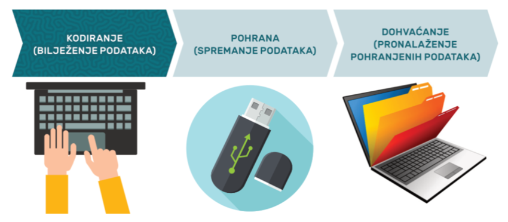
Pamćenje
• proces usvajanja, zadržavanja i korištenja informacija.
• povezano je s procesom učenja
• Postoje tri kontrolna međusobno povezana i nezavisna procesa pamćenja (SLIKA 1)
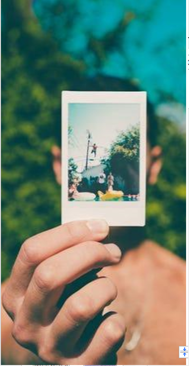
• Pamćenje nije poput snimke događaja koje smo doživjeli – mi pamćenje interpretiramo i praznine koje nađemo pokušavamo ispuniti
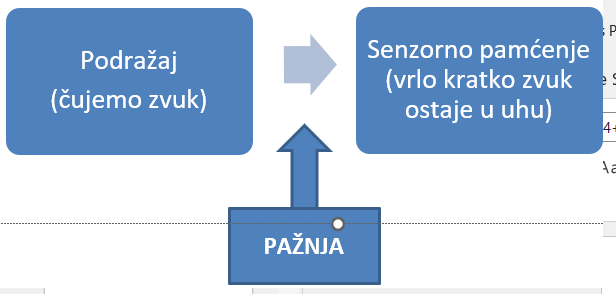
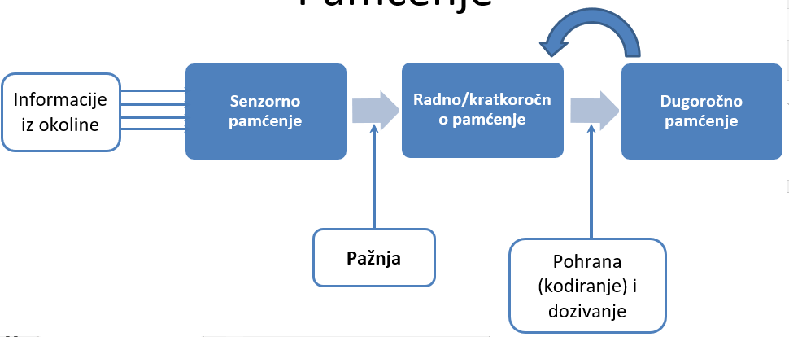
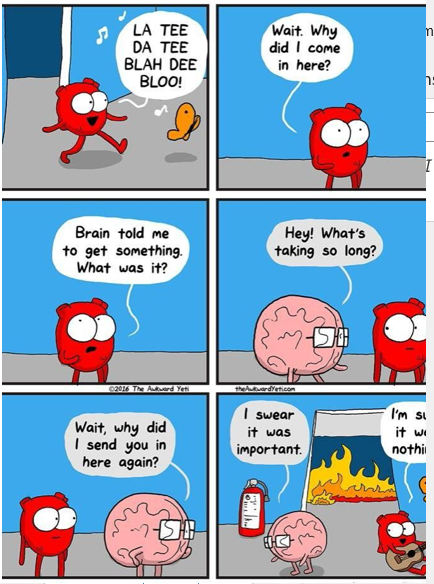
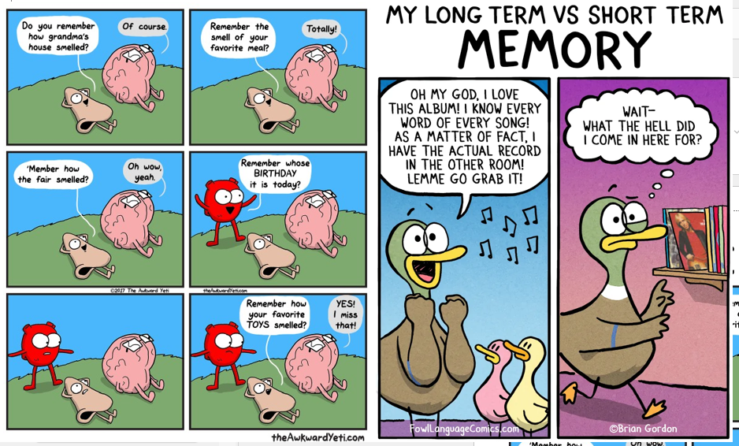
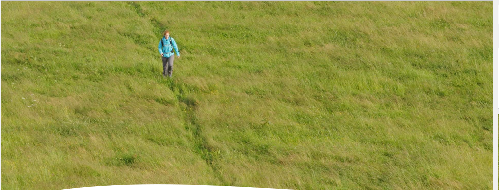
• Faze pamćenja kroz koje informacije prolaze:
Senzorno
omogućuje kontinuitet doživljaja (paosjet)
sadrži golem kapacitet pamćenja iako se informacije vrlo kratko zadržavaju
u vidnom sustavu samo oko dvije sekunde, a u slušnom tri do četiri sekunde (slika 3)
Kratkoročno (RADNO PAMĆENJE)
Obuhvaća informacije kojih smo u određenom trenutku svjesni i s kojima nešto radimo
sadrži ograničen kapacitet
maksimalan kapacitet pamćenja kod ljudi varira između 5 i 9 (7+/-2)
Lakše je upamtiti konkretne informacije nego apstraktne te smislene sadržaje od besmislenih (SLIKA 4)
Dugoročno pamćenje
Dio informacija koji se nije izgubio iz senzornog i kratkoroćnog se tu pojavljuje
Kapacitet mu je neograničen!
Informacije ostaju pohranjene do kraja života
Trag pamćenja (engrama)
predstavlja promjenu u putevima kojima se prenose živčani impulsi kroz mozak.
događa se zbog upamćivanja informacija te stvaranja engrama između stanica
Vrste dugoročnog pamćenja
1) Epizodičko pamćenje (autobiografsko)
pamćenje događaja, pamtimo gdje i kada se nešto dogodilo
2) Semantičko pamćenje ili znanje
pamćenje stvari koje jednostavno znamo, ne znajući kada i gdje smo ih naučili.
Koji je glavni grad Walesa?
3) Implicitno (nedeklarativno)
Proceduralno pamćenje – vještine
Pamćenje mjesta, vremena, učestalosti
Pamćenje klasičnim uvjetovanjem
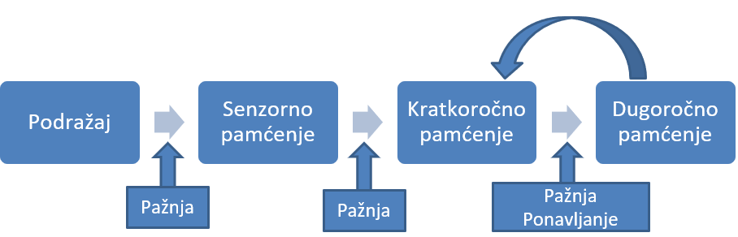
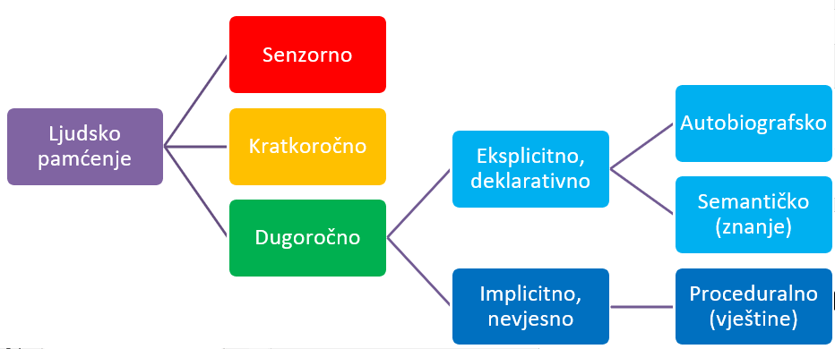
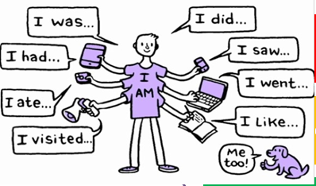
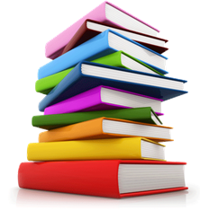
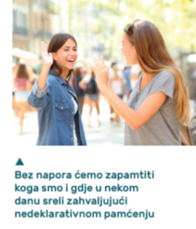
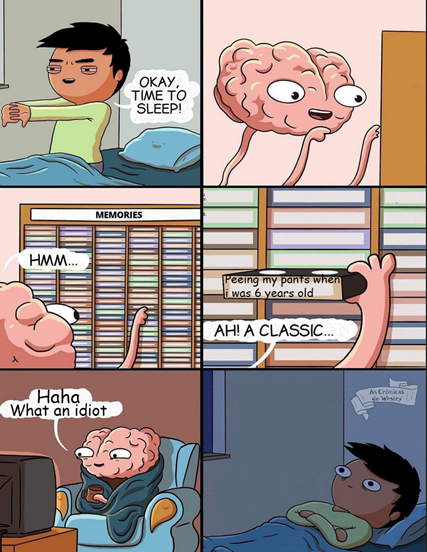
• Lakše se sjećamo emocionalno obojenih događaja
• Emocionalno stanje utječe na vjerojatnost zapamćivanja nekih elemenata situacije (onih opasnih i neugodnih)
• Preuveličavanje/umanjivanje
• Motivirano zaboravljanje
Kako organizirati učenje
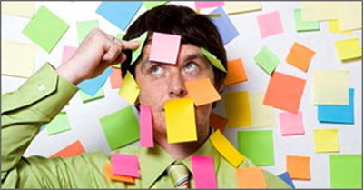
• Učenje treba rasporediti u vremenu (kako bi se izbjegla interferencija); • Slične informacije (koje to dopuštaju) treba grupirati; • Gradivo koje želimo upamtiti treba prenaučiti; • Ne učiti slično gradivo jedno za drugim • Organizirati gradivo i povezivati s onim što već znamo • Dobro je imati stalno mjesto za rad; • U početku učenja više puta ponovi gradivo iz sažetaka gradiva; • Koristi se mnemotehnikama za pamćenje neobičnih, potpuno novih, ali važnih dijelova gradiva; • Stalno se samoispituj • Držati se pravila aktivnog učenja (prepričavanje gradiva vlastitim riječima, razgovor, razni izvori informacija) • Odvajati bitne od nebitnih informacija.
1) Metoda dosjećanja: postavljanje pitanja o nečemu što bi trebalo biti pohranjeno u pamćenju (Glavni grad Walesa je ____________)
2) Metoda prepoznavanja: ponuđeni odgovori među kojima treba odabrati točan (Glavni grad Walesa je ili Liverpool ili Brighton ili Cardiff ili Belfast)
3) Metoda uštede: Ponovnom učenje sadržaja koje smo ranije učili (mnogo ih brže usvojimo). (Učenje o gradovima u Velikoj Britaniji)
• specifične mentalne strategije za poboljšanje pamćenja.
• nastale u staroj Grčkoj, a potom su ih nastavili koristiti i nadograđivati Rimljani
• Mogu biti Verbalne, vizualne i mješovite.
• Vrste mnemotehnika:
• 1) Akronim
• Niz riječi možemo lakše zapamtiti ako uzmemo prva slova tih riječi i napravimo skraćenicu od njih
• (npr. HNK, HAK, SAD…).
• tralirus – travanj, lipanj, rujan i studeni (mjeseci u godini koji imaju 30 dana)
• čenas - čekić, nakovanj i stremen – tri sićušne kosti u uhu
• vuk ne – voda u kiselinu ne, a obrnuto je dozvoljeno
• 2) Dodavanje informacija
• Za planete: Merkur, Venera, Zemlja, Mars, Jupiter, Saturn, Uran, Neptun, Pluton (MVZMJSUNP - Moja Vrlo Znatiželjna Majka Je Svima Uvijek Nabrajala Planete) (SLIKA 2)
• 3) Slaganje nepovezanih riječi u smislenu rečenicu ili kratku priču (Npr.: mačka, kišobran, srce Mačka se kišobranom branila od srca.)
• 4) Bizarne predodžbe – lakše ćemo zapamtiti čudnu, bizarnu sliku (vizualna mnemotehnika) (Npr. Einstein miriše cvijeta dva – E=mc2 (slika))
• 5) Metoda mjesta – vizualno predočimo neki dobro poznati prostor i u njemu stvari koje želimo zapamtiti (Npr. Ladice (Slika))
• 6) Mentalne mape– zabilješke razmjestimo na papiru tako da dobijemo prostorni raspored prikladan za zapamćivanje, mentalna mapa (slika)
• 7) Asocijacije - Nepoznatu riječ povežemo sa sličnom, ali poznatom riječju.
• distraktori – podražaji koji ometaju pamćenje (distraktor asocira na traktor)
• akrofobija – strah od visine (asocira na akrobata)
• agorafobija – strah od otvorenog prostora (asocira na agronomiju)
• Proaktivna interferencija – proaktivan je onaj koji ima inicijativu unaprijed – dakle staro učenje ometa učenje novih sadržaja
7) Asocijacije
Za nepoznatu riječ koju želimo naučiti utvrdi se asocijacija po zvučnosti s nekom riječi u našem jeziku koju znamo, a koja joj slično zvuči (npr. Quiche-kiša)
Zatim se stvori predodžba koja povezuje ključnu riječ sa stranom riječi koju želimo naučiti. (slika)
8) Rima
Unošenje ritma i rime u materijal koji treba zapamtiti znatno olakšava učenje.
Mala moja dajem ti na znanje, sila kroz masa daje ubrzanje
Ako je ispred zagrade više, zagrada se briše, ako je ispred zagrade manje u zagradi se mijenja stanje
Ja znam, jer sam lumen, gustoća je masa kroz volumen
Kvadrat nad hipotenuzom, to zna svako dijete, jednak je zbroju kvadrata nad obje katete
Prvom krećem, drugom skrećem, trećom žurim, četvrtom jurim
9) Ritam
Brojeve često izgovaramo određenim ritmom npr. ako netko telefonski broj izgovori ovim ritmom 23 38 192, a netko drugi slijedećim ritmom 233 81 92 čini nam se da se radi o različitim brojevima
10) Povezivanje slova
Stalaktit visi u spilji (s krova); stalagmit – gmiže na tlu
11) Pamćenje imena
Povežemo ime neke osobe s njezinim izgledom ili nekom osobinom te osobe.
MAJA – znatiželjna kao pčelica Maja
NEVEN – ime zapamtimo po cvijetu Nevenu


Zaboravljanje i smetnje pamćenja

Krivulja zaboravljanja (SLIKA 1) Razlozi zaboravljanja • Postupno gubljenje tragova pamćenja • Nemogućnost pronalaženja informacija • Potiskivanje (represija) • Interferencija (ometanje usvajanja neke informacije zbog onoga što je usvojeno ranije ili kasnije) Proaktivna interferencija - ono što smo prije naučili ometa kasnije, novo učenje (postavke novog mobitela) Retroaktivna interferencija - usvajanje novih informacija dovodi do zaboravljanja starih (novi broj otežava sjećanje starog)


1) RETROGRADNA AMNEZIJA – nemogućnost dosjećanja događaja prije ozljede mozga. 2) ANTEROGRADNA AMNEZIJA – nemogućnost stvaranja novog dugoročnog pamćenja. (SLIKA 3) 3) HIPOMNEZIJA – smanjena mogućnost pamćenja (najčešće organski uvjetovana). 4) HIPERMNEZIJA – poremećaj koji se očituje u pamćenju svih informacija koje se percipiraju 5) PARAMNEZIJE (lažna sječanja) - osobe „praznine“ u sjećanju nenamjerno popunjavaju izmišljenim podatcima • “Mandela efekt” 6) FUGA – disocijativni poremećaj u kojem osoba gubi sjećanje svoga identiteta (SLIKA 4)

Klasično uvjetovanje

• relativno trajna promjena u ponašanju koja nastaje kao posljedica vježbe ili iskustva.
Sve ono što nije određeno biološkim nasljeđem, stečeno je učenjem
Cjeloživotni se proces može događati namjerno i nenamjerno, aktivno i pasivno


Odredio Ivan Pavlov
Uvjetovani podražaj treba biti prepoznatljiv i dovoljno jak (zvono, a ne lagani dodir)
Kratki rok treba proći između podražaja
Veći broj uparivanja znači veću vjerojatnost stvaranja uvjetovane reakcije
Ako se uvjetovani podražaj zada sam nekoliko puta prije neuvjetovanog – manja vjerojatnost povezivanja (djeca i priprema za zubara – susret sa zubarom, pregled prije potrebe za liječenjem pokvarenog zuba)
Generalizacija podražaja – podražaji slični uvjetovanom podražaju također uzrokuju reakciju:
Npr. Bojimo se zubara, pa generaliziramo strah na sve ljude koji nose bijele kute
Ugrize nas jedan pas, počnemo se bojati svih pasa čak i ako su sasvim druge pasmine
Muka nam je nakon što smo pojeli hrenovku pa prestanemo jesti svo meso
Diskriminacija podražaja – učenje razlika među sličnim podražajima.
Npr. Mačka dolazi na zveckanje konzerve hrane, ali ne kad zveckate vilicom u drugu podlogu.
Bojite se velikih pasmina pasa, ali ne i malih
Mačka dođe na zvuk vašeg auta, ali ne i na zvuk drugih automobila
Gašenje – ako zadajemo uvjetovani podražaj bez neuvjetovanog nakon nekog vremena izgubi se njihova veza.
Npr. Mačka prestane dolaziti zato jer neko vrijeme lupkate da je dozovete na mažnju, a ne dajete joj hranu.
Prestanete se bojati neke pojave, jer se ne javlja nikakvo loše iskustvo zajedno s njom - npr. vozite se liftom, i ne zapnete u njemu ili se družite s psom i ne ugrize vas, već vam bude ugodno s njim...


Nacrtajte i objasnite kako je izgledao proces uvjetovanja i označite što je bio neuvjetovani podražaj, neuvjetovana reakcija, neutralni podražaj, uvjetovani podražaj i uvjetovana reakcija za navedeni primjer:


Instrumentalno/operativno uvjetovanje
Operantno uvjetovanje – proces kojim učimo povezivati ponašanje s posljedicama koje ga prate i mijenjati ga s obzirom na njih Burrhus. F. Skinner – tvorac teorije operantnog uvjetovanja - naučio golubove igrati stolni tenis i sl.

B.F. Skinner: sva ponašanja se mogu analizirati po ABC modelu (antecedent, behaviour, consequence)

Klasično uvjetovanje – nemamo kontrolu, učimo refleksno Operantno uvjetovanje – aktivna uloga i odgovor samog pojedinca Ponašanjima dolazimo do potrepljenja – aktivni smo – ponašanje je instrument dolaska do nečega što želimo Potkrepljenje – sve ono što povećava vjerojatnost ponašanja Može biti pozitivno i negativno Nije isto što i kazna – kazna smanjuje vjerojatnost ponašanja Vrste potkrepljivača: Primarni – biološki uvjetovani (glad, bol, pažnja, mažnja...) Sekundarni - povezani s primarnima kroz učenje (novac, pohvala, ocjene, priznanja...) Važno birati relevantne potkrepljivače

Pozitivno: odmor, ocjene, druženje, novac, izlasci, odjeća, izleti, pohvala, pažnja... Negativno: izbjeći kritiku, izbjeći neuspjeh, izbjeći bolest, izbjeći prljavštnu....

Teorije socijalnog učenja

Učenje po modelu: Modeliranje Imitacija Učenje promatranjem Simboličko učenje

Emocije
Stres
Psihologija
Motivacija i sukobi motivacija
Images
Image 1 Title
Image 2 Title
Image 2 Title
Image 2 Title
Images
SLIKA 1
SLIKA 2
SLIKA 3
SLIKA 3
SLIKA 3
SLIKA 3
SLIKA 3
Motivi su poticaji koji čovjekovo djelovanje usmjeravaju prema nekom cilju, održavaju to djelovanje i određuju njegov intenzitet. Primjer Ako dugo vremena nismo jeli osjećat ćemo intenzivnu glad. Javit će se jaka potreba za hranom. Kada pojedemo obrok, ta potreba će biti zadovoljena. Zamislite da nakon ručka s prijateljima idete na kavu u omiljenu slastičarnicu. Svi kolači su dobri i odabirete jedan. Niste ga odabrali zato što ste gladni, nego zato što ste išli na kolače s prijateljima. Da ste išli negdje drugdje, ne biste jeli kolače. Biološke potrebe (primarni motivi) Svi ljudi imaju biološke potrebe to jest primarne motive koji nam omogućuju preživljavanje. Glad, žeđ, disanje, potreba za stalnom tjelesnom temperaturom, seksualne potrebe Cilj zadovoljavanja ovih potreba jest homeostaza Motivacijski ciklus kod bioloških potreba sastoji se od četiri dijela: Psihosocijalni motivi – stečene potrebe naučene i razlikuju se od osobe do osobe; to mogu biti potreba za znanjem, potreba za ljudskim društvom, potreba za ugledom, postignućem, prisnošću, zabavom. U osnovi stečenih potreba nalaze se psihološki čimbenici. Maslowljeva hijerarhija motiva Američki psiholog Abraham Maslow smatrao je da su neki motivi važniji od drugih i da se mogu poredati po važnosti. Dok se ne zadovolje motivi koji su na nižim razinama, pojedinac neće krenuti u zadovoljavanje onih koji su na višim.
Images
SLIKA 1
SLIKA 2
SLIKA 3
SLIKA 3
SLIKA 3
Konflikt (sukob) motiva nastaje kada imamo dva ili više motiva koje ne možemo uskladiti ili istodobno zadovoljiti Neugodno stanje, izvor frustracije Sukob višestrukog privlačenja – slatke muke 2. Sukob višestrukog odbijanja: Pojedinac mora birati između dva ili više nepoželjna cilja – izbor između dva zla 3. Sukob istovremenog privlačenja i odbijanja Isti cilj istovremeno i privlačan i odbojan 4. Sukob višestrukog istovremenog privlačenja i odbijanja – dva cilja, svaki sa svojim prednostima i nedostatcima
Frustracija i obrambeni mehanizmi
Images
Image 1 Title
Image 2 Title
Image 2 Title
Image 2 Title
Što je to frustracija? Stanje emocionalne napetosti, uznemirenosti i nezadovoljstva u kojem se pojedinac nalazi kada ne može zadovoljiti svoje želje i potrebe zbog zapreka na putu do cilja. Izvor: percipirane unutarnje i vanjske zapreke 1) Vanjske zapreke Prirodna ili socijalna okolina Očekivane rodne uloge u društvu, ograničenja zbog države u kojoj smo rođeni,vanjske okolnosti (promet, internet...) 2) Unutarnje zapreke – naše osobine i konflikti motiva Zbog neodlučnosti izgubimo neku priliku, zbog dioptrije ne možemo postati astronaut ili pilot...
Images
SLIKA 1
SLIKA 2
SLIKA 3
SLIKA 3
SLIKA 3
SLIKA 3
SLIKA 3
SLIKA 3
SLIKA 3
SLIKA 3
SLIKA 3
SLIKA 3
SLIKA 3
SLIKA 3
Frustracija - izazvana najčešće raskorakom želja i mogućnosti Individualne razlike u toleranciji na frustraciju (vještina – vježba se) Agresivno ponašanje Izravno Neziravno: kritiziranje, ogovaranje, pomaknuta agresija Pasivna agresija 2) Povlačenje 3) Reogranizacija aktivnosti Smišljanje novih načina da dođemo do onog što želimo Obrambeni mehanizmi: oblici ponašanja koje ljudi često koriste u frustrirajućim situacijama. nesvjesni procesi iskrivljavanja stvarnosti koji pojedinca brane od osjećaja manje vrijednosti, anksioznosti i frustracije Pojedinac ne mijenja stresnu situaciju već samo doživljaj situacije. Obrambene mehanizme koriste svi ljudi i njihovo korištenje nije uvijek štetno, ali svi uključuju neki oblik samozavaravanja . 1) Racionalizacija Opravdavanje Omalovažavanje – kiselo grožđe Uljepšavanje – slatki limun 2) Supstitucija Cilj koji ne možemo ostvariti, zamijenimo sličnim Slikar – povijest umjetnosti Medicina – veterina 3) Kompenzacija Kako bismo nadomjestili stvaran ili zamišljeni nedostatak u nekom području, jako se trudimo u nekom drugom, nepovezanom području života Npr. radoholičarski pristup poslu, omalovažavanje drugih kao kompenzacija vlastitog osjećaja manje vrijednosti 4) Projekcija Pripisivanje vlastitih osobina i postupaka drugim ljudima kako se ne bismo suočili sa sobom Npr. Ne sviđa nam se neka osoba pa mislimo da se mi njoj ne sviđamo i nalazimo dokaze Ljuti smo, pitamo osobu koja nas je naljutila zašto se ljuti na nas 5) Regresija Kad smo frustrirani ili nesigurni, ponašamo se onako kako je karakteristično za ranije faze razvoja „Kriza srednjih godina”, trubljenje bez prestanka u prometu, bacanje po podu u odrasloj dobi jer nešto nije kako smo zamislili… 6) Fiksacija Ustrajanje u aktivnosti iako je jasno da nas ne dovodi do željenog cilja Npr. konstantni pokušaji da „osvojimo” osobu koja je rekla ne 7) Negiranje Odbijamo prihvatiti stvarnost, ne priznajemo nemogućnost zadovoljenja neke potrebe Npr. Neprihvaćanje kritike, neprihvaćanje očitih činjenica, odbijanje prihvaćanja pomoći iako je jasno da nam treba i sl. 8. Reaktivna formacija Kada se neki osjećaj koji imamo ne uklapa u našu sliku o sebi pa ga pretvorimo u njegovu suprotnost Npr. Osjećamo privlačnost prema nekome ili nečemu koju smatramo neprihvatljivom pa ju pretvorimo u mržnju, osudu i netrpeljivost Netko nam se ne sviđa pa budemo posebno ljubazni prema njemu Pravimo se da smo super, a zapravo nismo